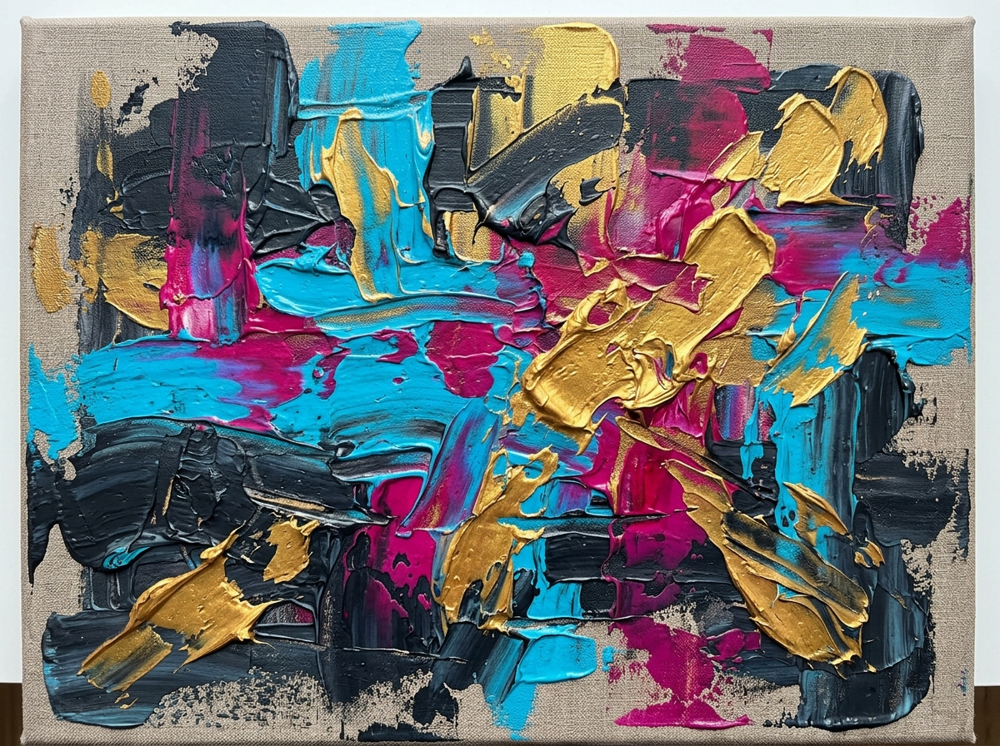
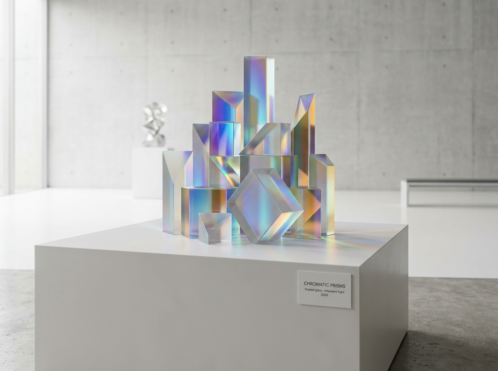
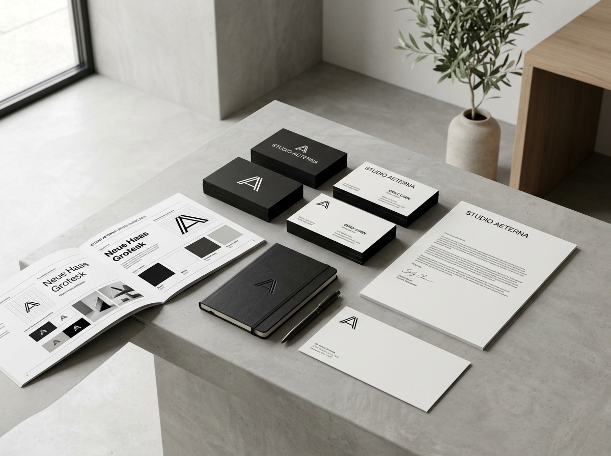
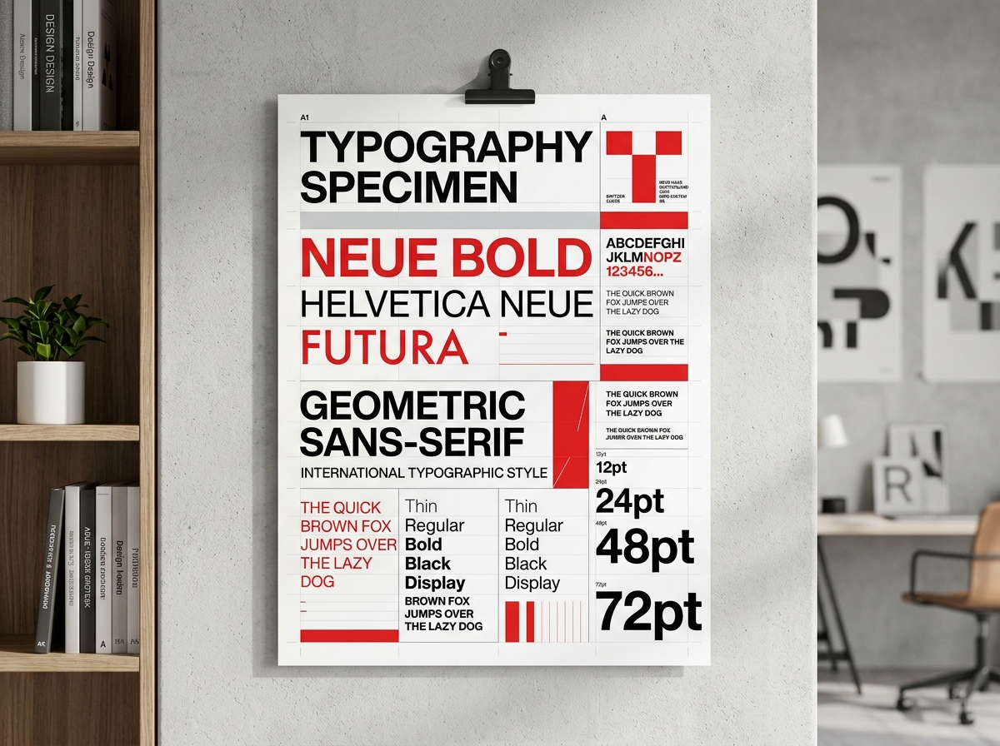
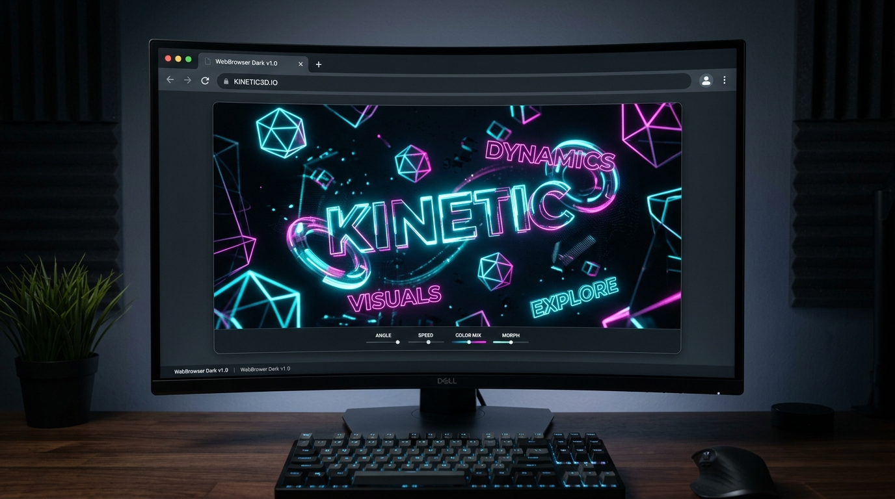

FLUORESCENT IMPASTO NO. 04
Layered palette knife acrylic strokes, gold leaf glaze & cyan pigments on unprimed raw linen.
CHROMATIC PRISMS & LIGHT
3D digital generative art exploring frosted glass refraction and spectral color spill.
TRANQUIL HORIZON REFLECTION
Long-exposure photography capturing violet gradients and calm lake symmetry at twilight.

STUDIO PRACTICE & TACTILE EXPERIMENTS
A creative sandbox for tactile side projects outside of client work. Here I explore physical mediums like heavy impasto acrylics, cast plaster forms, and glass refraction.
Every study is a hands-on exploration of color fields, texture building, and light projection.
STUDIO EXPERIMENT LOG
// RECENT NOTES & MATERIAL STUDIESAcrylic Impasto over Plaster
Testing heavy body acrylic glazes applied with steel trowels over carved plaster substrate.
Frosted Glass Refraction
Setting up directional studio lights against iridescent acrylic glass blocks to capture spectral color spill.
Oil Pastel Color Fields
Blending raw earth pigments on heavy cotton rag paper to explore high-contrast monochromatic gradients.
DESIGN & SYSTEM
Brand Architecture, Visual Identity Systems & Modern Kinetic Typography.

AETERNA BRAND SYSTEM
Complete brand architecture, stationery guidelines, geometric logo system, and custom grid layout specs.

SWISS TYPE SPECIMEN
International typographic style poster series exploring heavy geometric sans-serif font hierarchy and red grid lines.
MINIMALIST SPATIAL UI
High-key gallery application design with clean lines, dark/light theme tokens, and glassmorphism.
WEB & CODE
Interactive Digital Environments, Kinetic WebGL Interfaces & Creative Web Coding.

KINETIC 3D TYPOGRAPHY SYNTH
An interactive WebGL audio-visual experiment combining floating physics, procedural audio synthesis, and custom variable font modulation.
ULTRA-MINIMALIST STUDIO SUITE
High performance single-page web platform designed with high-contrast typography, glassmorphism overlays, and smooth slide view transitions.
PROCEDURAL GLSL SHADER LAB
Real-time GPU fragment shader experiments exploring liquid noise algorithms, spectral light dispersion, and raymarching Signed Distance Fields.
CREATIVE CODE ARCHITECTURE
// PERFORMANCE & ENGINEERING PHILOSOPHY60FPS WebGL & GPU Shaders
Hardware-accelerated graphics using custom GLSL shaders and Three.js scene graphs for fluid motion.
Zero-Dependency Vanilla CSS
Custom CSS design tokens, cubic-bezier transition curves, and CSS Variables for ultra-fast load times.
Modular SPA Architecture
Lightweight single-page navigation physics with instant DOM state management and zero full-page reloads.